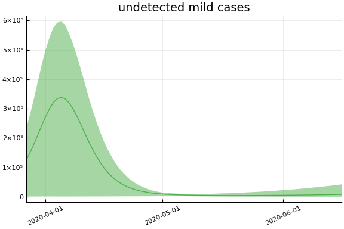
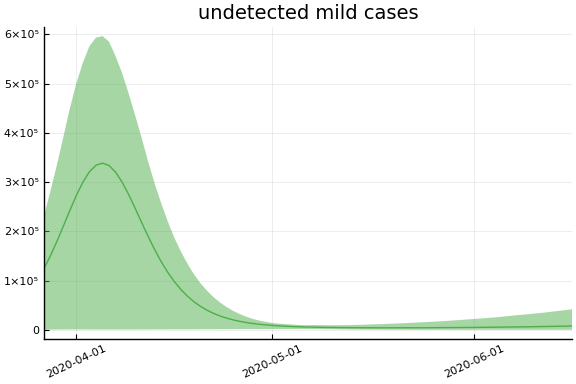
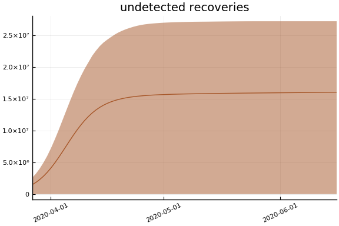
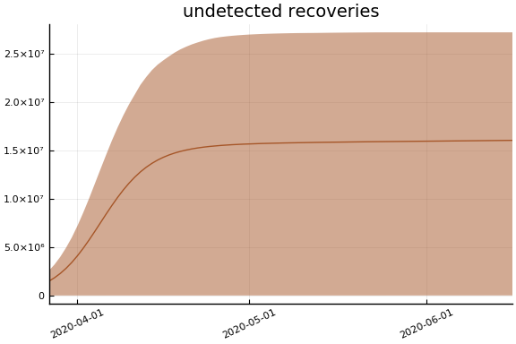
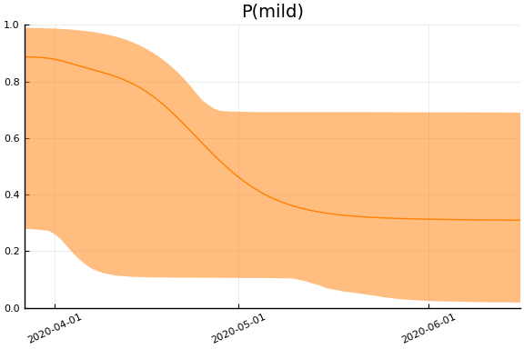
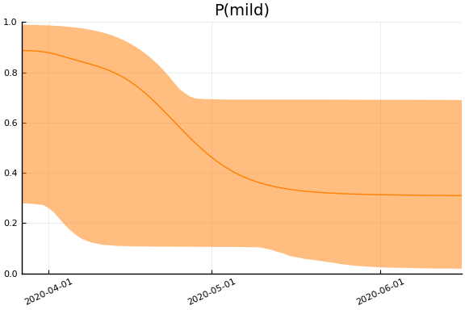

This work is licensed under a Creative Commons Attribution-ShareAlike 4.0 International License
using CovidSEIR, Plots, DataFrames, JLD2, StatsPlots
Plots.pyplot()
jmddir = normpath(joinpath(dirname(Base.find_package("CovidSEIR")),"..","docs","jmd"))
covdf = covidjhudata()
describe(covdf)
11×8 DataFrame. Omitted printing of 2 columns
│ Row │ variable │ mean │ min │ median │ max │ nuni
que │
│ │ Symbol │ Union… │ Any │ Union… │ Any │ Unio
n… │
├─────┼───────────┼───────────┼─────────────┼───────────┼────────────┼─────
────┤
│ 1 │ Date │ │ 2020-01-22 │ │ 2020-03-28 │ 67
│
│ 2 │ confirmed │ 486.367 │ 0 │ 0.0 │ 121478 │
│
│ 3 │ Province │ │ Alberta │ │ Zhejiang │ 79
│
│ 4 │ Country │ │ Afghanistan │ │ Zimbabwe │ 177
│
│ 5 │ Lat │ 22.0528 │ -41.4545 │ 23.8298 │ 71.7069 │
│
│ 6 │ Long │ 23.2675 │ -135.0 │ 20.9394 │ 178.065 │
│
│ 7 │ deaths │ 18.9005 │ 0 │ 0.0 │ 10023 │
│
│ 8 │ recovered │ 162.121 │ 0 │ 0.0 │ 62098 │
│
│ 9 │ iso2c │ │ AD │ │ ZW │ 170
│
│ 10 │ cpop │ 2.27709e8 │ 33785.0 │ 2.49924e7 │ 1.39273e9 │
│
│ 11 │ ppop │ 2.74801e7 │ 41078 │ 1.557e7 │ 111690000 │
│
Canada¶
We estimate the model with the following code. It takes about an hour.
canada = CountryData(covdf, "Canada");
using Turing
canmod = countrymodel(canada)
cc = Turing.psample(canmod, NUTS(0.65), 2000, 4)
import JLD2
JLD2.@save "$jmddir/canada_$(Dates.today()).jld2" cc
JLD2.@load "$jmddir/canada_2020-03-28.jld2" cc;
Estimates¶
plot(cc)

We can see that there might be convergence issues. There are large differences between the four chains for some parameters.
describe(cc)
2-element Array{MCMCChains.ChainDataFrame,1}
Summary Statistics
parameters mean std naive_se mcse ess r_hat
────────── ─────── ────── ──────── ────── ──────── ──────
a 0.3088 0.2412 0.0038 0.0231 89.6474 1.0359
pE0 0.0000 0.0000 0.0000 0.0000 70.5632 1.0856
p[1] 0.1042 0.1802 0.0028 0.0271 16.0643 2.4066
p[2] 0.1835 0.1769 0.0028 0.0205 21.5262 1.2919
sigC 55.9872 5.3305 0.0843 0.4254 151.1913 1.0043
sigD 1.2701 0.1226 0.0019 0.0091 156.7255 1.0465
sigRc 17.4322 1.4134 0.0223 0.0887 303.4507 1.0111
β[1] 0.5243 0.3414 0.0054 0.0402 26.0625 1.1952
β[2] 0.9836 0.6433 0.0102 0.0441 170.9821 1.0298
γ[1] 0.0504 0.1739 0.0027 0.0222 19.6993 1.3554
γ[2] 0.2633 0.2855 0.0045 0.0318 26.4008 1.2485
τ 1.4733 1.2375 0.0196 0.1117 60.5718 1.0828
Quantiles
parameters 2.5% 25.0% 50.0% 75.0% 97.5%
────────── ─────── ─────── ─────── ─────── ───────
a 0.0750 0.1199 0.2164 0.4248 0.9082
pE0 0.0000 0.0000 0.0000 0.0000 0.0000
p[1] 0.0021 0.0057 0.0098 0.1192 0.6038
p[2] 0.0024 0.0044 0.1515 0.2911 0.5979
sigC 46.3921 52.1740 55.7451 59.4129 66.9490
sigD 1.0686 1.1820 1.2583 1.3417 1.5536
sigRc 14.9106 16.3755 17.3844 18.3851 20.2662
β[1] 0.0931 0.3109 0.4274 0.6564 1.4965
β[2] 0.0789 0.5019 0.8582 1.3500 2.4933
γ[1] 0.0007 0.0042 0.0072 0.0098 0.6798
γ[2] 0.0022 0.0124 0.1721 0.4366 0.9681
τ 0.0092 0.3943 1.2458 2.2669 4.2214
The parameter estimates are generally not very precise.
Fit¶
sdf = simtrajectories(cc, canada, 1:150)
f = plotvars(sdf, canada)
f.fit

In this figure, solid lines are observed data, dashed lines are posterior means, and the shaded region is a pointwise 90% credible interval.
Note that the last day of data used in the estimation was March 27th. The fit appears quite good. The fitted estimates are also remarkably precise. Although individual parameters are not precisely estimated, the combination of them that gives rise to the observed data is precisely estimated.
Implications¶
We now look at the model’s projections for some observed and unobserved variables.
for fig in f.trajectories
display(fig)
end

 
 

 
 


 

In general we see a similar pattern as noted above: the posteriors for observed variables are fairly precise. However, the posteriors for unobserved variables, such as the portion of undetected infections and the portion of mild infections, are very imprecise.